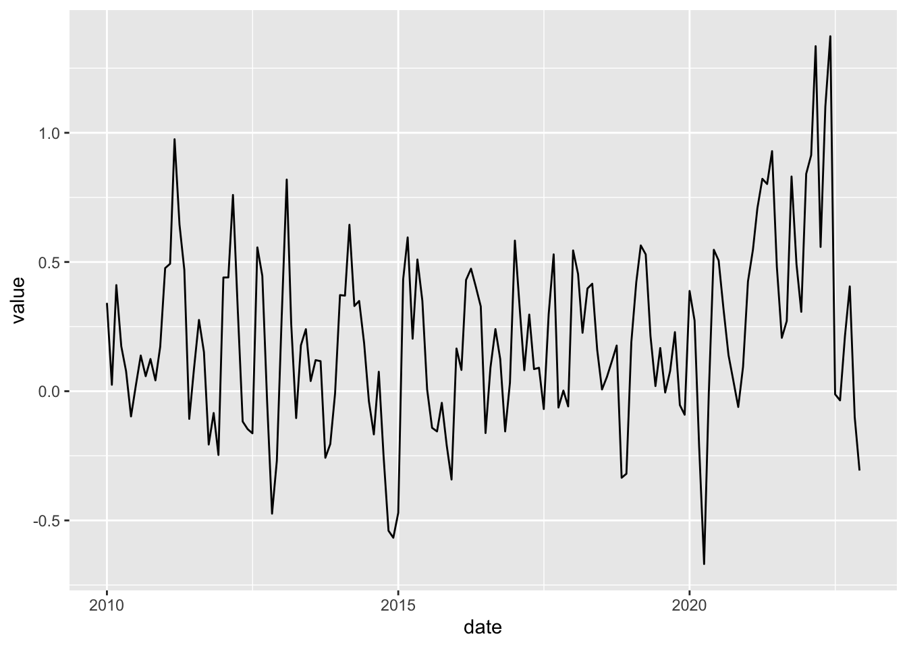
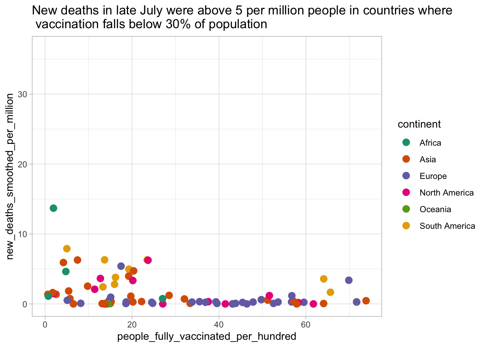
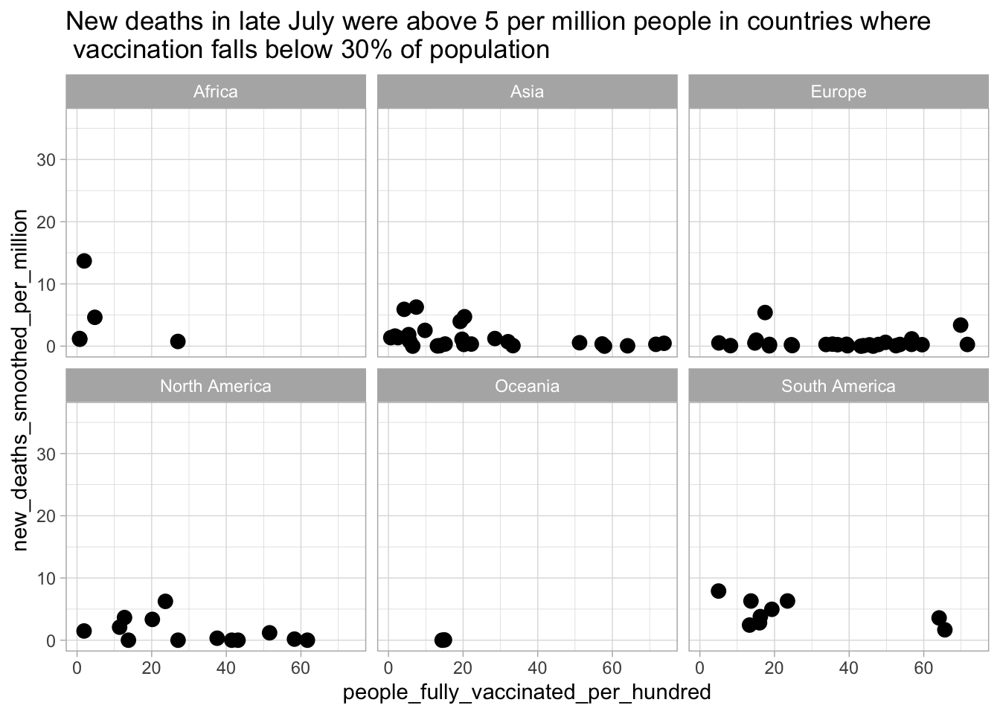

library(tidyverse)
data_path <- 'data/owid-covid-data.csv'
covid_data <- read_csv(data_path)1 Introduction
Essential tools for modern economic analysis
The purpose of this chapter is to introduce the main functions of the core packages in tidyverse. It’s not intended to be a thorough description of every function, rather the idea is to provide the basic tools so that those who are either base R users or aren’t R users at all can follow along with the rest of the book. For a more detailed approach to tidyverse, the best source is undoubtedly the great Grolemund and Wickham (2017). For those who feel comfortable with tidyverse, a quick skim through the chapter might be enough.
1.1 What’s tidyverse?
To start, what’s tidyverse? According to the official website:
The tidyverse is an opinionated collection of R packages designed for data science. All packages share an underlying design philosophy, grammar, and data structures.
From my own experience I can ensure you that tidyverse is all you need to carry out data analyses as neat and flexible as possible. By neat I mean succinct code without any redundancy, i.e, a single block of code (not a bunch of loose objects) doing all the desired task. Flexible, in turn, means the code is general enough. It depends on the nature of the task at hand, so take it more like a philosophy. For example, does the solution still work if the data is updated with new values? Or does it depend on changeable references such as column positions?
Most of the time writing neat and flexible code takes longer and requires a dose of creativity, but it surely pays off. Moreover, with practice this will become more and more natural and the cost will get significantly lower. In the next sections we’ll review the most used functions to go through all the steps of everyday data analyses using core tidyverse packages designed to Import, Wrangle, Program and Plot.
1.2 Importing
1.2.1 Reading from flat files
readr is the tidyverse’s package used to import data from flat files (basically .csv and .txt files). The most generic function is read_delim as it has a large set of parameters that allow us to declare the structure of the data we want to import. In practice, we often use the read_csv which is a special case of the former with some predefined settings suitable for .csv files – the most obvious being the comma as the column delimiter.
If you’re running RStudio IDE, I recommend you to click on Import Dataset at the Environment sheet (by default it’s located on the upper right panel) to manually define the appropriate settings for your file. I know we should never be encouraged to use windows, click on buttons or any kind of shortcuts provided by the IDE. This is the only exception I think is worth it. First, because it can be tedious to set many specific parameters via trial-and-error to correctly import your data. Second, because once you have the configuration done the code is displayed at the bottom of the window so you can copy it and paste it on your script and, eventually, get rid of this shortcut as you learn how things work. Lastly, you probably won’t repeat this action many times when working on a given task and there’s not much to improve on this process. Then, Yes, it’s a big waste of time trying to understand each single parameter.
Just for the sake of illustration, let’s use readr to import the COVID data set from Our World in Data. It’s a standard .csv file, so we can use read_csv without any additional parameter. We just need to provide the file path:
or the URL:
data_url <- 'https://raw.githubusercontent.com/owid/covid-19-data/master/public/data/owid-covid-data.csv'
covid_data <- read_csv(data_url)Tidyverse also provides packages for reading other usual file types. For instance, we can use readxl to read MS Excel spreadsheets and haven to read data generated by popular statistical softwares (SPSS, Stata and SAS) in much the same way we did with readr for .csv files (you can check them at the Import Dataset dropdown menu) so we won’t cover them. Rather, let’s use the rest of this section to talk about something very important and that usually gets less attention in books: reading data from an API.
1.2.2 Reading from API
Although the use of traditional flat files are still widespread, organizations are increasingly switching to API’s to make data available to the public. This is a huge improvement since we’re able to customize our demand and import only the data we need for the specific task.
If you don’t know what an API is, think of it as an interface to a database. However, instead of reading all the content from this database you can inform what columns you want, the desired observations (time range if it’s a time series) and so on. These filters are embedded in a request and the right form to specify it is usually available in a documentation provided by the API maintainer.
For example, the Federal Reserve Bank of St. Louis maintains a huge repository with hundreds of thousands of economic time series and we can import them using an API. The information on how to build the request is available in the documentation, where we can see a link with instructions on how to ‘Get the observations or data values for an economic data series’. There, we find an example of a request for the US Real Gross National Product:
We can break this request down to see its parts in more detail:
- The main (static) URL to access the Observations section:
\[ \underbrace{\text{https://api.stlouisfed.org/fred/series/observations?}}_\text{Static: API URL} \]
- The series ID which identifies the US Real Gross National Product data.
\[ \underbrace{\text{series\_id=GNPCA}}_\text{Parameter: Series ID} \]
- The API Key. We must create an account and require a personal key in order to import data from the API. This one is an example for illustrative purposes only.
\[ \underbrace{\text{api\_key=abcdefghijklmnopqrstuvwxyz123456}}_\text{Parameter: API Key} \]
- The file type for the output. There are several types, but I’d rather working with JSON.
\[ \underbrace{\text{file\_type=json}}_\text{Parameter: File Type} \]
Note that all the parameters following the static part are separated by an &. Then, if we want to add any extra parameter it should be placed right after this character. Also, the order of the parameters is not relevant.
Suppose we want to read monthly data for the US Consumer Price Index (CPI). The series_id is CPALTT01USM657N. Besides, we’d only like to read data between January 2010 and December 2022. How can we do so? There are two parameters – observation_start and observation_end which set, respectively, the range of the observation period (YYYY-MM-DD format).
The code below creates a separate object for each part of the request. Then, we use the glue function from the homonymous package to merge the pieces into a single string adding the & character between parameters. We could create the full string all at once, but creating separate objects makes it easier to find and edit values as well as to transform this task into a custom function if we had to frequently read data from this source (more on this later).
You’ll need to register in order to be granted access to the API. Since this information is personal, I stored my key as an environmental variable named api_fred_key which can be accessed like any other object.
library(glue)
api_url <- 'https://api.stlouisfed.org/fred/series/observations?'
api_fred_key <- Sys.getenv('api_fred_key')
api_series_id <- 'CPALTT01USM657N'
obs_start <- '2010-01-01'
obs_end <- '2022-12-01'
api_filetype <- 'json'
api_request <- glue('{api_url}series_id={api_series_id}&observation_start={obs_start}&observation_end={obs_end}&api_key={api_fred_key}&file_type={api_filetype}')Now we use the httr package to connect to the API, send the request and get the content. The other steps transform the content from JSON to a standard R object (a list) and then convert it to a tibble (the tidyverse’s improved format for data frames). Notice that the CPI data is stored in the list element named observations. However, this is specific for this API and if we were to import data from another source we’d have to check in which element the data would be stored.
library(httr)
library(jsonlite)
library(tidyverse)
cpi_request <- GET(url = api_request)
cpi_content <- content(cpi_request, as = 'text')
cpi_list <- fromJSON(cpi_content, flatten = FALSE)
cpi_tbl <- cpi_list[['observations']] %>% as_tibble()
cpi_tbl# A tibble: 156 x 4
realtime_start realtime_end date value
<chr> <chr> <chr> <chr>
1 2023-04-11 2023-04-11 2010-01-01 0.34174735701485
2 2023-04-11 2023-04-11 2010-02-01 0.024920738207648
3 2023-04-11 2023-04-11 2010-03-01 0.410628353657108
4 2023-04-11 2023-04-11 2010-04-01 0.173688491069743
5 2023-04-11 2023-04-11 2010-05-01 0.0775197354237721
6 2023-04-11 2023-04-11 2010-06-01 -0.0976267084673888
7 2023-04-11 2023-04-11 2010-07-01 0.0211043057371509
8 2023-04-11 2023-04-11 2010-08-01 0.138066427840807
9 2023-04-11 2023-04-11 2010-09-01 0.0581736230715569
10 2023-04-11 2023-04-11 2010-10-01 0.124519888847696
# ... with 146 more rowsThis concludes our section on how to import data. If you’re struggling with other types of data, Tidyverse’s official website provides a comprehensive list of all the supported file formats and the respective packages used to handle them. Also, you can take a look at the rio package, which makes it easy to import and export data from and to different file extensions.
1.3 Wrangling
This is by far the most important section in this Chapter. The main goal here is to provide a general sense of how to get raw data ready to use. For this, we’ll focus on the roles of the main functions from dplyr package rather than the idiosyncrasies and generalizations of each one. More sophisticated applications will be shown in the next chapters.
1.3.1 Data manipulation
Let’s use the COVID data we imported in the last section. Starting with the glimpse function to have a grasp of the data, we can see some useful information such as the number of rows and columns, as well as columns’ names and classes (whether they’re character, double, etc).
covid_data %>%
glimpse()We’re usually not interested in all of these data, so the first couple of tasks we’d like to perform is to filter the relevant categories and select the desired columns. For example, we could be interested in analyzing new COVID cases (column new_cases) only in Brazil (rows equal to Brazil in column location). Furthermore, we’d like to get rid of duplicate rows if there’s any.
One of the great contributions of tidyverse is to assign names (verbs) to the functions according to the actions they perform – many are admittedly SQL-inspired. For example, distinct drops observations (rows) which are not unique, whereas select picks variables based on their names (or positions). The exception is filter, which retains the rows which satisfy a given condition (the analogue of WHERE in SQL).
Conditions are sentences which returns TRUE or FALSE. It’s straightforward to think of conditions using logical operators, such as ==, >, <, etc. Nevertheless, there’s a bunch of expressions in R which return TRUE or FALSE. Moreover, we can always create our own condition to generate the desired output. We’ll see many examples throughout this book.
The code below performs the initial steps described above to generate a subset of the data.
covid_data_sub1 <- covid_data %>%
distinct() %>%
select(date, continent, location, new_cases) %>%
filter(location == 'Brazil')Next, we may need to create additional columns. For instance, suppose that actual new cases in Brazil are much higher than reported because the country doesn’t have enough tests and a conservative estimate points to a number of, say, twice the official count. So we’d like to add a column which is twice the value of the original one representing our guess of the real situation. In addition, we’d also like to create a column to indicate the dominant strain at each period of time. We know that the Delta strain took over Gamma by the end of July 2021 and, then, Omicron took over Delta in the beginning of 2022.
The mutate verb can be used to create new variables as a function of existing ones. Also, it can be used to modify existing variables as new variables overwrites those with the same name. case_when is another SQL-inspired function used inside mutate to create a new variable based on conditions. It’s worth noting that it returns NA if no condition is met. In this case, a useful workaround is to define an extra condition as TRUE ~ value, thus assigning a value to all the unmet conditions – think of this as an else statement.
covid_data_sub2 <- covid_data_sub1 %>%
mutate(
real_new_cases = 2*new_cases,
dominant_strain = case_when(
date <= '2021-07-31' ~ 'Gamma',
date > '2021-07-31' & date <= '2021-12-31' ~ 'Delta',
date > '2021-12-31' & date <= '2022-02-01' ~ 'Omicron',
TRUE ~ "We don't know"
)
)The between function is a shortcut for numeric conditions that are bounded both on the left and on the right. It also works with dates if we declare the arguments as date objects. Therefore, we can replace conditions 2 and 3 in order to have a more compact and efficient code (it’s implemented in C++, like many modern R functions).
covid_data_sub2 <- covid_data_sub1 %>%
mutate(
real_new_cases = 2*new_cases,
dominant_strain = case_when(
date <= '2021-07-31' ~ 'Gamma',
between(date, as.Date('2021-07-31'), as.Date('2021-12-31')) ~ 'Delta',
between(date, as.Date('2021-12-31'), as.Date('2022-02-01')) ~ 'Omicron',
TRUE ~ "We don't know"
)
)So far we’ve worked on a single group of data: new cases in Brazil. However, we usually have many categories to work on. We might be interested in analyzing new cases in all European countries, for example. In this case, we’ll need the group_by function, which allows us to perform operations by group. group_by is often used in conjunction with mutate or summarise to create new data for each group. The latter uses aggregate functions (mean, max, min, etc) to produce a summary of the data.
For example, suppose we want to know which European country recorded the highest number of new covid cases in a single day by the mid of 2022. This might be achieved by grouping the data by location and then using summarise with max. In addition, we can use arrange to sort the rows by value (we use desc to sort in descending order). Don’t forget to ungroup data as soon as you no longer need to perform grouped operations.
covid_data_sub3 <- covid_data %>%
distinct() %>%
filter(
continent == 'Europe',
date <= '2021-06-30'
) %>%
group_by(location) %>%
summarise(max_new_cases = max(new_cases)) %>%
ungroup() %>%
arrange(desc(max_new_cases))
covid_data_sub3# A tibble: 51 x 2
location max_new_cases
<chr> <dbl>
1 United Kingdom 68066
2 Germany 45333
3 Italy 40902
4 Poland 35253
5 Sweden 32485
6 Russia 29499
7 Belgium 23921
8 Switzerland 21926
9 Ukraine 20456
10 Netherlands 13037
# ... with 41 more rowsNote that some countries such as Spain, Portugal and France returned NA. This happened because they probably have any missing value. We could easily ignore it by passing the argument na.rm = TRUE to the max function. However, another problem would arise: countries with no data on new cases would return -Inf. To get around these two issues, we can filter all the missing values out in the data set using the logical operator is.na() (the ! before the condition works as a negation). In this case removing the missing values isn’t a problem, but be aware that for some tasks this may influence the outcome.
covid_data_sub4 <- covid_data %>%
distinct() %>%
filter(
continent == 'Europe',
date <= '2022-06-30',
!is.na(new_cases)
) %>%
group_by(location) %>%
summarise(max_new_cases = max(new_cases)) %>%
ungroup() %>%
arrange(desc(max_new_cases))
covid_data_sub4# A tibble: 49 x 2
location max_new_cases
<chr> <dbl>
1 France 117900
2 Germany 103018
3 Spain 93822
4 United Kingdom 92713
5 Belgium 47836
6 Italy 40902
7 Russia 40210
8 Poland 35253
9 Sweden 32485
10 Ukraine 28477
# ... with 39 more rowsIn addition, we might want to know not only what the highest numbers were but when they did occur (the peak date). Since the summarise function is designed to return a single value, we must use an expression which returns a single value. If we used date = max(date), we’d keep the most recent date for the data in each country. Definitely, that’s not what we want. So a good way to address this issue is to combine a subset operation with a condition inside. In simpler terms, we’ll subset from the column date the observation where new cases were at its high. Since we can have multiple dates which satisfy this condition, we’ll keep the most recent one (the max of them).
covid_data_sub5 <- covid_data %>%
distinct() %>%
filter(
continent == 'Europe',
date <= '2022-06-30',
!is.na(new_cases)
) %>%
group_by(location) %>%
summarise(
max_new_cases = max(new_cases),
peak_date = date[which(new_cases == max_new_cases)] %>% max()
) %>%
ungroup() %>%
arrange(desc(max_new_cases), peak_date) %>%
slice(1:10)
covid_data_sub5# A tibble: 10 x 3
location max_new_cases peak_date
<chr> <dbl> <date>
1 France 117900 2021-04-11
2 Germany 103018 2021-12-09
3 Spain 93822 2021-01-25
4 United Kingdom 92713 2021-12-17
5 Belgium 47836 2021-11-29
6 Italy 40902 2020-11-13
7 Russia 40210 2021-11-06
8 Poland 35253 2021-04-01
9 Sweden 32485 2020-12-29
10 Ukraine 28477 2021-11-04In case it went unnoticed, the previous code showed a really nice feature of mutate/summarise: you can use a variable you’ve just created in a subsequent task inside the same calling. In this example we used max_new_cases as an input in peak_date, all of this inside the same summarise calling as if all steps were performed sequentially.
In the last two lines, we used arrange to sort countries firstly by the maximum number of new cases and then by their peak date and slice to subset only the first ten countries out of the forty-nine in our data set. This ends our approach to single data sets for now.
But before we jump to the next section, there’s something very important to address: merging multiple data sets. There are two families of functions in dplyr to merge data frames, *_join and bind_*. Let’s see how they work.
The *_join functions are used to merge two data frames horizontally, matching their rows based on specified keys. For example, take the covid_data_sub5 data frame we created above. It contains the top ten European countries with the highest number of new Covid cases in a single day and their peak dates. Suppose we want to add information on the population size for each country, which is available in another data frame named europe_population displayed below.1
# A tibble: 51 x 2
Country Pop_size
<chr> <dbl>
1 Russia 145912022
2 Germany 83900471
3 United Kingdom 68207114
4 France 67564251
5 Italy 60367471
6 Spain 46745211
7 Ukraine 43466822
8 Poland 37797000
9 Romania 19127772
10 Netherlands 17173094
# ... with 41 more rowsWhat we want here is to add the column Pop_Size from europe_population into covid_data_sub5 matching rows based on location (the column with countries in the main data set). For this, we can use the left_join function, which adds the content from the second data frame to the first one. The by argument is needed because the name of the key column differs across the two data sets.2
covid_data_sub5_with_pop <- covid_data_sub5 %>%
left_join(europe_population, by = c('location' = 'Country'))
covid_data_sub5_with_pop# A tibble: 10 x 4
location max_new_cases peak_date Pop_size
<chr> <dbl> <date> <dbl>
1 France 117900 2021-04-11 67564251
2 Germany 103018 2021-12-09 83900471
3 Spain 93822 2021-01-25 46745211
4 United Kingdom 92713 2021-12-17 68207114
5 Belgium 47836 2021-11-29 11632334
6 Italy 40902 2020-11-13 60367471
7 Russia 40210 2021-11-06 145912022
8 Poland 35253 2021-04-01 37797000
9 Sweden 32485 2020-12-29 10160159
10 Ukraine 28477 2021-11-04 43466822We could have been assigned a slightly different task. For example, adding to european_population the information on maximum daily number of new Covid cases and peak dates we have from covid_data_sub5. This can also be achieved with left_join by reversing the order of the data frames (and names of the key column since they’re not the same). An effortless alternative is to replace left_join with right_join, which adds to the second data frame (the one on the right) the information from the first data frame (the one on the left). In this case we don’t need to change the order of the parameters.
pop_with_covid_info <- covid_data_sub5 %>%
right_join(europe_population, by = c('location' = 'Country'))
pop_with_covid_info# A tibble: 51 x 4
location max_new_cases peak_date Pop_size
<chr> <dbl> <date> <dbl>
1 France 117900 2021-04-11 67564251
2 Germany 103018 2021-12-09 83900471
3 Spain 93822 2021-01-25 46745211
4 United Kingdom 92713 2021-12-17 68207114
5 Belgium 47836 2021-11-29 11632334
6 Italy 40902 2020-11-13 60367471
7 Russia 40210 2021-11-06 145912022
8 Poland 35253 2021-04-01 37797000
9 Sweden 32485 2020-12-29 10160159
10 Ukraine 28477 2021-11-04 43466822
# ... with 41 more rowsAt first glance it seems to produce the same outcome, but notice that the number of rows are different in the two resulting data sets. In the first case left_join kept all the rows from covid_data_sub5 and only the corresponding rows from europe_population, whereas right_join did the opposite. In summary, left_join and right_join keep all the rows from just one of the two data frames.
Sometimes, however, we want to keep all the rows from both data frames. For example, imagine that covid_data_sub5 had data not only on European but on South American countries as well. In addition, the european_population data frame also included the populations from Asian countries. If we merged the data frames using the functions above, we’d end up loosing observations on either Covid in South America or populations in Asia.
In order to merge the data frames by their common countries while keeping the remaining observations from both, we should employ the full_join function. On the other hand, if we’re willing to keep only the common countries in both data frames, this is the case for the inner_join function.
These four functions comprise what it’s called mutating-joins since they add columns from one data frame to the other. There are also the filtering-joins functions, which filter the rows from one data frame based on the presence (semi_join) or absence (anti_join) of matches in the other data frame. Given the latter category is used to a much lesser extent, I won’t go into detail right now. Eventually they’ll show up in the coming chapters.
We saw that *_join* operations are particularly useful to merge data frames horizontally and by their matching rows according to key variables. More often than not we need to stack data vertically by their matching columns. For example, suppose the Covid data set was released as a single file for each country and we needed to perform some comparisons between France and the United Kingdom - covid_fr and covid_uk data sets shown below.
# A tibble: 690 x 3
date location new_cases
<date> <chr> <dbl>
1 2020-01-31 United Kingdom 2
2 2020-02-01 United Kingdom 0
3 2020-02-02 United Kingdom 0
4 2020-02-03 United Kingdom 6
5 2020-02-04 United Kingdom 0
6 2020-02-05 United Kingdom 1
7 2020-02-06 United Kingdom 0
8 2020-02-07 United Kingdom 0
9 2020-02-08 United Kingdom 4
10 2020-02-09 United Kingdom 1
# ... with 680 more rows# A tibble: 697 x 4
date location new_cases total_cases
<date> <chr> <dbl> <dbl>
1 2020-01-24 France 2 2
2 2020-01-25 France 1 3
3 2020-01-26 France 0 3
4 2020-01-27 France 0 3
5 2020-01-28 France 1 4
6 2020-01-29 France 1 5
7 2020-01-30 France 0 5
8 2020-01-31 France 0 5
9 2020-02-01 France 1 6
10 2020-02-02 France 0 6
# ... with 687 more rowsThis can be easily accomplished by bind_rows which, unlike the *_join family, allows us to provide several data frames. What’s cool about bind_rows is that non-matching columns are kept with their values filled with NA for the data frames where the column is absent. In the example above, the covid_fr data set has a total cases column which is absent in covid_uk.
covid_fr_uk <- bind_rows(covid_fr, covid_uk)
covid_fr_uk# A tibble: 1,387 x 4
date location new_cases total_cases
<date> <chr> <dbl> <dbl>
1 2020-01-24 France 2 2
2 2020-01-25 France 1 3
3 2020-01-26 France 0 3
4 2020-01-27 France 0 3
5 2020-01-28 France 1 4
6 2020-01-29 France 1 5
7 2020-01-30 France 0 5
8 2020-01-31 France 0 5
9 2020-02-01 France 1 6
10 2020-02-02 France 0 6
# ... with 1,377 more rowsThe bind_cols function is more restrictive in this regard. It’s used to merge the columns of data frames, but matching by row position rather than a key variable. For this reason, we can’t have data frames of different lengths. In practice, it’s much more common to rely on *_join* functions when we need to merge data frames horizontally.
1.3.2 Data layout
We’ve walked through the main functions of dplyr. Now, we turn to the tidyr package. According to the tidyverse’s website, the goal of tidyr is to help us create tidy data. It means a data set where every column is a variable; every row is an observation; and each cell is a single value.
Tidy data is also known as wide format – since it increases the number of columns and decreases the number of rows –, as opposed to the long format, where data are stacked increasing the number of rows and decreasing the number of columns. It took me a while before I could tell if a data set was either in wide or long format, so don’t worry if it’s not so clear right now. Perhaps a more direct way of thinking about this distinction is to ask yourself: Is all the information contained in a single cell?. If so, it’s wide format. If not, then it’s long format.
For example, is the Covid data set in wide or long format? If we took a single cell from the new_cases column, does it convey all the information for this variable contained in the data set? No, it doesn’t. We know the number of new cases in a given date, but we don’t know the country that value refers to – is this from Germany? Nigeria? Chile?
We can use the pivot_wider function from tidyr package to convert from long to wide format. The syntax is very easy to understand: names_from is the column we want to widen, whereas values_from is the column containing the observations that will fill each cell. id_cols is a parameter used to declare the set of columns that uniquely identifies each observation. In practice, it drops all the other columns in the data set. Hence, if we want to keep all the other variables, just skip it.
covid_wide_01 <- covid_data %>%
pivot_wider(
id_cols = 'date',
names_from = 'location',
values_from = 'new_cases'
)
covid_wide_01# A tibble: 720 x 226
date Afghanistan Albania Algeria Andorra Angola Anguilla
<date> <dbl> <dbl> <dbl> <dbl> <dbl> <dbl>
1 2020-02-24 5 NA NA NA NA NA
2 2020-02-25 0 NA 1 NA NA NA
3 2020-02-26 0 NA 0 NA NA NA
4 2020-02-27 0 NA 0 NA NA NA
5 2020-02-28 0 NA 0 NA NA NA
6 2020-02-29 0 NA 0 NA NA NA
7 2020-03-01 0 NA 0 NA NA NA
8 2020-03-02 0 NA 2 1 NA NA
9 2020-03-03 0 NA 2 0 NA NA
10 2020-03-04 0 NA 7 0 NA NA
# ... with 710 more rows, and 219 more variables: `Antigua and Barbuda` <dbl>,
# Argentina <dbl>, Armenia <dbl>, Aruba <dbl>, Australia <dbl>,
# Austria <dbl>, Azerbaijan <dbl>, Bahamas <dbl>, Bahrain <dbl>,
# Bangladesh <dbl>, Barbados <dbl>, Belarus <dbl>, Belgium <dbl>,
# Belize <dbl>, Benin <dbl>, Bermuda <dbl>, Bhutan <dbl>, Bolivia <dbl>,
# `Bonaire Sint Eustatius and Saba` <dbl>, `Bosnia and Herzegovina` <dbl>,
# Botswana <dbl>, Brazil <dbl>, `British Virgin Islands` <dbl>, ...Notice that now we have 225 columns rather than 67 of the original data set with each cell conveying the whole information: new cases in a given date for a specific country. So, what if we wanted to have both new_cases and new_deaths columns in wide form? We just need to provide a vector with the desired variables in values_from. By default, the new columns will be named according to the following pattern: variable_location.
Since the variables names already contain a single underscore, it’s a good idea to set a different character as separator – a double underscore works fine. This is because we might need to reverse the operation later for a given task, then it’s much easier to identify it. Otherwise, we’d have to use regular expression to inform the specific position of the repeated character – for example, whether it’s the first or the second underscore.
covid_wide_02 <- covid_data %>%
pivot_wider(
id_cols = 'date',
names_from = 'location',
values_from = c('new_cases', 'new_deaths'),
names_sep = '__'
)
covid_wide_02# A tibble: 720 x 451
date new_cases__Afghanistan new_cases__Albania new_cases__Algeria
<date> <dbl> <dbl> <dbl>
1 2020-02-24 5 NA NA
2 2020-02-25 0 NA 1
3 2020-02-26 0 NA 0
4 2020-02-27 0 NA 0
5 2020-02-28 0 NA 0
6 2020-02-29 0 NA 0
7 2020-03-01 0 NA 0
8 2020-03-02 0 NA 2
9 2020-03-03 0 NA 2
10 2020-03-04 0 NA 7
# ... with 710 more rows, and 447 more variables: new_cases__Andorra <dbl>,
# new_cases__Angola <dbl>, new_cases__Anguilla <dbl>,
# `new_cases__Antigua and Barbuda` <dbl>, new_cases__Argentina <dbl>,
# new_cases__Armenia <dbl>, new_cases__Aruba <dbl>,
# new_cases__Australia <dbl>, new_cases__Austria <dbl>,
# new_cases__Azerbaijan <dbl>, new_cases__Bahamas <dbl>,
# new_cases__Bahrain <dbl>, new_cases__Bangladesh <dbl>, ...Our new data set expanded to 450 columns. As we create more and more columns to get a wide data set it might become harder to perform some simple tasks. For example, using filter is generally easier than using a conditional select when we want to keep only the relevant data.
In summary, long format may be preferable over wide format when the data set contains more than one grouping variable or we want to work on more than one variable. Besides, long format data sets are ideal for plotting with ggplot2 package as we’ll see later.
Therefore, it’s not unusual to convert a data set from wide to long format. The syntax is very similar to what we saw earlier when converting from long to wide format. The unique difference is in the cols argument, used to declare what columns we want to stack. However, since wide data sets usually have a large number of columns and we’re often interested in putting all of them in long format, it’s much easier to declare what columns we want to leave out (-).
covid_long_01 <- covid_wide_02 %>%
pivot_longer(
cols = -'date',
names_to = c('variable', 'location'),
values_to = 'value',
names_sep = '__'
)
covid_long_01# A tibble: 324,000 x 4
date variable location value
<date> <chr> <chr> <dbl>
1 2020-02-24 new_cases Afghanistan 5
2 2020-02-24 new_cases Albania NA
3 2020-02-24 new_cases Algeria NA
4 2020-02-24 new_cases Andorra NA
5 2020-02-24 new_cases Angola NA
6 2020-02-24 new_cases Anguilla NA
7 2020-02-24 new_cases Antigua and Barbuda NA
8 2020-02-24 new_cases Argentina NA
9 2020-02-24 new_cases Armenia NA
10 2020-02-24 new_cases Aruba NA
# ... with 323,990 more rowsNote that now even the variables (new_cases and new_deaths) are stored in a single column (variable). This is probably an abuse of language, but I call this a complete long format – as opposed to the original format where the data set was only partially in the long format (the variables were indeed in wide format). For most applications, I think this is the best way to organize the data.
Converting a data set between wide and long formats might not completely solve our problem. Sometimes, two pieces of information are merged in a single column. For example, suppose that the location column had both the continent and country names instead of only the country as in the original data set. We’ll call this data set covid_loc_cont.
# A tibble: 139,819 x 4
location date new_cases new_deaths
<chr> <date> <dbl> <dbl>
1 Afghanistan_Asia 2020-02-24 5 NA
2 Afghanistan_Asia 2020-02-25 0 NA
3 Afghanistan_Asia 2020-02-26 0 NA
4 Afghanistan_Asia 2020-02-27 0 NA
5 Afghanistan_Asia 2020-02-28 0 NA
6 Afghanistan_Asia 2020-02-29 0 NA
7 Afghanistan_Asia 2020-03-01 0 NA
8 Afghanistan_Asia 2020-03-02 0 NA
9 Afghanistan_Asia 2020-03-03 0 NA
10 Afghanistan_Asia 2020-03-04 0 NA
# ... with 139,809 more rowsThis is undesirable since we can no longer use group_by or filter over either country or continents names alone, for instance. Hence, the best practice is to have a single column for each variable. This can be easily achieved using the separate function, with a highly self-explanatory syntax. Again, the separator character being unique in the string makes the job much easier.
covid_separate <- covid_loc_cont %>%
separate(
col = 'location',
into = c('location', 'continent'),
sep = '_'
)
covid_separate# A tibble: 139,819 x 5
location continent date new_cases new_deaths
<chr> <chr> <date> <dbl> <dbl>
1 Afghanistan Asia 2020-02-24 5 NA
2 Afghanistan Asia 2020-02-25 0 NA
3 Afghanistan Asia 2020-02-26 0 NA
4 Afghanistan Asia 2020-02-27 0 NA
5 Afghanistan Asia 2020-02-28 0 NA
6 Afghanistan Asia 2020-02-29 0 NA
7 Afghanistan Asia 2020-03-01 0 NA
8 Afghanistan Asia 2020-03-02 0 NA
9 Afghanistan Asia 2020-03-03 0 NA
10 Afghanistan Asia 2020-03-04 0 NA
# ... with 139,809 more rowsThe only caveat to all this simplicity is when we have non-trivial separators. For example, imagine that we had no underscore to separate location from continent.
# A tibble: 139,819 x 4
location date new_cases new_deaths
<chr> <date> <dbl> <dbl>
1 AfghanistanAsia 2020-02-24 5 NA
2 AfghanistanAsia 2020-02-25 0 NA
3 AfghanistanAsia 2020-02-26 0 NA
4 AfghanistanAsia 2020-02-27 0 NA
5 AfghanistanAsia 2020-02-28 0 NA
6 AfghanistanAsia 2020-02-29 0 NA
7 AfghanistanAsia 2020-03-01 0 NA
8 AfghanistanAsia 2020-03-02 0 NA
9 AfghanistanAsia 2020-03-03 0 NA
10 AfghanistanAsia 2020-03-04 0 NA
# ... with 139,809 more rowsHow could we manage to separate them? Ideally, we should provide a regular expression (or simply regex) to match the appropriate pattern to split the string into location and continent (the sep argument works with regex). If you don’t know what regex is, think of it as a code used to match patterns, positions and all kinds of features in a string.
At first glance, a natural choice would be to split the string as of the second uppercase letter. This would work for Afghanistan, France, Netherlands, Chile and all single-worded countries. However, this would fail for countries with two or more words: United States, New Zealand and many others.
Then, you could argue that a more general approach would be to use regex to match the last uppercase letter in the string. Not actually, because we have a couple of two-worded continents: North America and South America. So, for example, CanadaNorth America would be split into CanadaNorth and America instead of Canada and North America.
More often than not, the direct solution is the most difficult to implement (or we simply don’t know how to accomplish it) and so we have to think about alternative ways. Data science is all about this. Since a regex solution alone might be very tough or even unfeasible, we’ll get back to this problem later when covering text manipulation with the stringr package.
For now, let’s just get done with the tidyr package looking at two other very commonly used functions. The first one is unite, which is the counterpart of separate. We can use it to convert the covid_separate data frame back to the original form as in covid_loc_cont.
covid_unite <- covid_separate %>%
unite(
col = 'location',
c('location', 'continent'),
sep = '_')
covid_unite# A tibble: 139,819 x 4
location date new_cases new_deaths
<chr> <date> <dbl> <dbl>
1 Afghanistan_Asia 2020-02-24 5 NA
2 Afghanistan_Asia 2020-02-25 0 NA
3 Afghanistan_Asia 2020-02-26 0 NA
4 Afghanistan_Asia 2020-02-27 0 NA
5 Afghanistan_Asia 2020-02-28 0 NA
6 Afghanistan_Asia 2020-02-29 0 NA
7 Afghanistan_Asia 2020-03-01 0 NA
8 Afghanistan_Asia 2020-03-02 0 NA
9 Afghanistan_Asia 2020-03-03 0 NA
10 Afghanistan_Asia 2020-03-04 0 NA
# ... with 139,809 more rowsAnd finally the nest function. The nest function is usually used in conjunction with group_by in order to create a new format of data frame in which every cell is now a list rather than a single observation and, thus, might store any kind of object – data frames, lists, models, plots and so forth.
The example below shows how to create a nested data frame for the covid data grouped by country. Note that each cell on column data is now a data frame itself corresponding to the data for each country.
covid_eu_nest <- covid_data %>%
filter(continent == 'Europe') %>%
group_by(location) %>%
nest()
covid_eu_nest# A tibble: 51 x 2
# Groups: location [51]
location data
<chr> <list>
1 Albania <tibble [665 x 66]>
2 Andorra <tibble [659 x 66]>
3 Austria <tibble [665 x 66]>
4 Belarus <tibble [662 x 66]>
5 Belgium <tibble [686 x 66]>
6 Bosnia and Herzegovina <tibble [656 x 66]>
7 Bulgaria <tibble [653 x 66]>
8 Croatia <tibble [665 x 66]>
9 Cyprus <tibble [653 x 66]>
10 Czechia <tibble [663 x 66]>
# ... with 41 more rowsI find it most useful when we need to perform several tasks over whole data sets. For example, if we had to transform the raw data, create plots and fit models for each country in the covid data set. The base R solution in this case would be to create list of lists, which can be very confusing sometimes. We’ll come back to nested data frames when we talk about functional programming with the purrr package.
1.3.3 Text manipulation
The need to handle text data has grown substantially in parallel with the popularity of Machine Learning models and, more specifically, Natural Language Processing (NLP). For these more advanced applications, the challenge is to standardize a large set of (messy) texts in order to extract features which can then feed the models and generate predictions.
Nevertheless, knowing the basics of text manipulation is critical for everyday tasks. It includes subsetting parts of a word, detecting if specific patterns are present, replacing a sequence of characters by something else and so forth. The functions from the stringr package do a terrific job in simplifying all these operations and go far beyond.
Similarly to what we did in the previous sections, we’ll focus on the most widely used functions. Let’s start with str_detect, which is conveniently used in conjunction with dplyr::filter since it returns TRUE if the specific pattern is found in the string and FALSE otherwise.
For example, let’s say we want to analyze the Covid data only for North and South Americas. We’ve learned how to do so using dplyr::filter.
covid_americas <- covid_data %>%
filter(continent %in% c('North America', 'South America')) This one is not cumbersome. But let’s pretend there were, say, 50 continents on Earth with 25 having ‘America’ in their names. Would it still make sense to write all these 25 names in a vector? Absolutely not. Since all of them share a common pattern, we can easily employ str_detect to do the trick.
covid_americas <- covid_data %>%
filter(stringr::str_detect(continent, 'America'))Note that we could have left aside several characters using only, say, ‘Am’ or ‘Ame’. This would have worked fine if there was no other continent with this sequence of characters. Of course, this parsimony makes more sense for lengthy words or long sentences. For short words I recommended you to write the full word in order to prevent any undesirable output.In addition, we can also provide multiple patterns to str_detect by separating them with a |.
covid_americas <- covid_data %>%
filter(stringr::str_detect(continent, 'South|North'))Finally, we may use the negate = TRUE argument if we’re interested in the opposite of the pattern we provide – pretty much like ! in conditions. It’s specially useful when we want to keep most categories but one (or a few). For example, suppose that now we want to analyze every continent except for Asia. Instead of writing them all, we could simply do the following:
covid_exAsia <- covid_data %>%
filter(str_detect(continent, 'Asia', negate = TRUE))Another recurrent task when we’re dealing with strings is to remove a part of it. It’s generally required in order to establish a standard within categories so we can perform further operations. The complexity of this task vary depending on the form of this undesired part.
The most simple case is when we have to remove a sequence of characters which is fixed both in length and in position. For example, suppose we have a data frame covid_numCont in which the observations in the continent column starts with a random number from 0 to 9 – think of it as a typing error from the source, since the same reasoning applies if those random numbers were present only in a few observations.
# A tibble: 10 x 4
continent location date new_cases
<chr> <chr> <date> <dbl>
1 2.Africa Somalia 2021-05-03 0
2 7.Asia Qatar 2021-02-22 463
3 4.Asia Palestine 2020-11-20 1472
4 7.Asia Hong Kong 2020-08-20 18
5 3.Asia Yemen 2020-10-21 0
6 7.South America Suriname 2021-11-28 19
7 2.North America Saint Vincent and the Grenadines 2020-05-10 0
8 4.South America Colombia 2021-05-31 23177
9 2.Africa Saint Helena 2021-02-25 0
10 6.Africa Gabon 2021-05-22 0To solve this is solely a matter of subsetting the string from position three onwards using str_sub. The end argument defaults to last character, so we don’t need to explicit it.
covid_numCont %>%
mutate(continent = str_sub(continent, start = 3))# A tibble: 139,819 x 4
continent location date new_cases
<chr> <chr> <date> <dbl>
1 Asia Afghanistan 2020-02-24 5
2 Asia Afghanistan 2020-02-25 0
3 Asia Afghanistan 2020-02-26 0
4 Asia Afghanistan 2020-02-27 0
5 Asia Afghanistan 2020-02-28 0
6 Asia Afghanistan 2020-02-29 0
7 Asia Afghanistan 2020-03-01 0
8 Asia Afghanistan 2020-03-02 0
9 Asia Afghanistan 2020-03-03 0
10 Asia Afghanistan 2020-03-04 0
# ... with 139,809 more rowsNice. But what if the random numbers ranged from 0 to 10?
# A tibble: 10 x 4
continent location date new_cases
<chr> <chr> <date> <dbl>
1 10.Africa Senegal 2020-09-15 223
2 5.Asia Indonesia 2020-08-09 1893
3 5.Asia Bangladesh 2020-10-18 1274
4 5.Africa South Africa 2020-09-11 1960
5 10.Oceania Cook Islands 2021-08-01 0
6 2.Africa Seychelles 2021-04-02 41
7 8.Asia Saudi Arabia 2021-04-26 958
8 8.Europe Gibraltar 2021-02-10 7
9 1.Asia Oman 2020-11-11 302
10 8.Europe France 2021-11-16 19778With an extra digit, we could no longer resort to the previous solution. I don’t intend to dedicate an exclusive section to regular expressions, but simple examples will eventually show up throughout the book. In this case, we could use a simple regular expression inside str_remove to get rid of everything before and up to the ., .*\\..
covid_numCont %>%
mutate(continent = str_remove(continent, ".*\\."))# A tibble: 139,819 x 4
continent location date new_cases
<chr> <chr> <date> <dbl>
1 Asia Afghanistan 2020-02-24 5
2 Asia Afghanistan 2020-02-25 0
3 Asia Afghanistan 2020-02-26 0
4 Asia Afghanistan 2020-02-27 0
5 Asia Afghanistan 2020-02-28 0
6 Asia Afghanistan 2020-02-29 0
7 Asia Afghanistan 2020-03-01 0
8 Asia Afghanistan 2020-03-02 0
9 Asia Afghanistan 2020-03-03 0
10 Asia Afghanistan 2020-03-04 0
# ... with 139,809 more rowsTyping errors may arise under different forms along the character column. These cases usually require a more thorough evaluation and, more often than not, the solution is to manually replace the wrong words by the correct ones. For instance, in the data frame below (named covid_typo) we can find two different typos for North America: there’s a missing h in rows 1 and 5; whereas there’s an extra h in rows 3 and 8.
# A tibble: 22,308 x 4
continent location date new_cases
<chr> <chr> <date> <dbl>
1 Nort America Anguilla 2020-03-28 2
2 North America Anguilla 2020-03-29 0
3 Northh America Anguilla 2020-03-30 0
4 North America Anguilla 2020-03-31 0
5 Nort America Anguilla 2020-04-01 0
6 North America Anguilla 2020-04-02 1
7 North America Anguilla 2020-04-03 0
8 Northh America Anguilla 2020-04-04 0
9 North America Anguilla 2020-04-05 0
10 North America Anguilla 2020-04-06 0
# ... with 22,298 more rowsSince the data frame contains a huge number of observations, it may be present in other positions as well. We can use str_replace to fix it for the whole column.
covid_typo %>%
mutate(
continent = str_replace(continent, 'Nort America', 'North America'),
continent = str_replace(continent, 'Northh America', 'North America')
)Or we can simply pass a vector with all the replacements to the str_replace_all function.
covid_typo %>%
dplyr::mutate(
continent = stringr::str_replace_all(
continent,
c('Nort America' = 'North America',
'Northh America' = 'North America')
)
)There’s one last kind of typo we can’t help but mention: whitespace. Whitespaces are particularly troublesome when they’re misplaced in the start/end of string or repeated inside it. Because they’re very easy to go unnoticed the stringr package contains two functions to cope with them: str_trim and str_squish. The former removes whitespaces from start/end of the string, whereas the later removes them from inside of a string.
The data frame below (named covid_ws) uses the same example as above, but now with a whitespace in the end of observations 1 and 5; and a repeated whitespace inside the observations 3 and 8. Note that tibble automatically adds quotation marks around the strings to highlight the extra whitespaces. This is awesome!
# A tibble: 22,308 x 4
continent location date new_cases
<chr> <chr> <date> <dbl>
1 "North America " Anguilla 2020-03-28 2
2 "North America" Anguilla 2020-03-29 0
3 "North America" Anguilla 2020-03-30 0
4 "North America" Anguilla 2020-03-31 0
5 "North America " Anguilla 2020-04-01 0
6 "North America" Anguilla 2020-04-02 1
7 "North America" Anguilla 2020-04-03 0
8 "North America" Anguilla 2020-04-04 0
9 "North America" Anguilla 2020-04-05 0
10 "North America" Anguilla 2020-04-06 0
# ... with 22,298 more rowsWe can easily get rid of the whitespaces using those functions. It’s advisable to use them as a preprocessing step whenever we’re working with character columns that should not have these extra whitespaces.
covid_ws %>%
dplyr::mutate(
continent = continent %>%
str_trim() %>%
str_squish()
)To finish up, let’s use the tools we’ve just learned to solve the problem we’ve left over from the previous subsection. To recap, we wanted to separate the column location into country and continent. The issue was that with no separator character between the two names, we should resort to any kind of complicated regular expression to do the trick.
# A tibble: 139,819 x 4
location date new_cases new_deaths
<chr> <date> <dbl> <dbl>
1 AfghanistanAsia 2020-02-24 5 NA
2 AfghanistanAsia 2020-02-25 0 NA
3 AfghanistanAsia 2020-02-26 0 NA
4 AfghanistanAsia 2020-02-27 0 NA
5 AfghanistanAsia 2020-02-28 0 NA
6 AfghanistanAsia 2020-02-29 0 NA
7 AfghanistanAsia 2020-03-01 0 NA
8 AfghanistanAsia 2020-03-02 0 NA
9 AfghanistanAsia 2020-03-03 0 NA
10 AfghanistanAsia 2020-03-04 0 NA
# ... with 139,809 more rowsAs I said earlier, data science is all about finding workarounds. Of course we’re often interested in general approaches, but sometimes we have to settle for a lower level solution which gets the job done. For example, in this case we could waste a long time figuring out the best possible solution whereas a simpler one is at hand.
This simpler solution consists of employing the str_extract function to extract the name of the continents in conjunction with str_remove to remove them from the original column. Remember that multiple patterns should be provided as a single string with these patterns separated by |.
continents <- c(
'Asia',
'Europe',
'Africa',
'South America',
'North America',
'Oceania'
) %>%
paste0(collapse = '|')
covid_loc_cont2 %>%
mutate(
continent = str_extract(
location,
continents
),
location = str_remove(
location,
continents
)
)# A tibble: 139,819 x 5
location date new_cases new_deaths continent
<chr> <date> <dbl> <dbl> <chr>
1 Afghanistan 2020-02-24 5 NA Asia
2 Afghanistan 2020-02-25 0 NA Asia
3 Afghanistan 2020-02-26 0 NA Asia
4 Afghanistan 2020-02-27 0 NA Asia
5 Afghanistan 2020-02-28 0 NA Asia
6 Afghanistan 2020-02-29 0 NA Asia
7 Afghanistan 2020-03-01 0 NA Asia
8 Afghanistan 2020-03-02 0 NA Asia
9 Afghanistan 2020-03-03 0 NA Asia
10 Afghanistan 2020-03-04 0 NA Asia
# ... with 139,809 more rowsJob done! Next we turn to dates, which is a special form of string. Handling them properly is essential to analyze time series data.
1.3.4 Date manipulation
Having knowledge on date manipulation is crucial to perform a lot of tasks when we’re dealing with time series data. Date objects are very convenient since they allow us to extract features that can be used for many purposes. The subject is so vast that the lubridate package was created exclusively to handle date objects.
The first step when we’re working with dates is to convert the string to a date object. In order to get rid of ambiguity issues, lubridate contains a set of predefined functions that take into account the ordering of year, month and day in the string.
For instance, if we have a date in the standard YYYY-MM-DD format we can use the ymd function. Note that it works regardless of how these terms are separated: it might be like 2021-12-01, 2022/12/01 or even 20221201. Also, months names (full or abbreviated forms) are allowed: 2021-December-01 or 2021-Dec-01. The same logic applies to the whole family of related functions: mdy, dmy, ydm, dym, my, ym and so on.
library(lubridate)
ymd('2022/12/01')[1] "2022-12-01"mdy('december, 1, 2022')[1] "2022-12-01"dmy('01122022')[1] "2022-12-01"my('Dec-2021')[1] "2021-12-01"In case the string format doesn’t match any of the predefined patterns, we can use lubridate::as_date function and declare the unusual format using specific operators: %Y for year; %m for month; and %d for day. There are two other useful ones: %b for months names (full or abbreviated) and %y for two-digits year.
Now, let’s see how to extract features from date objects and how to use them to perform common operations. Take the following data set (named brl_usd) which provides daily values of the Brazilian Real (BRL) versus the US Dollar from January 2010 to December 2021 where the column date is in the DD/MM/YYYY format.
# A tibble: 3,014 x 2
date brl
<chr> <dbl>
1 4/1/2010 1.72
2 5/1/2010 1.72
3 6/1/2010 1.73
4 7/1/2010 1.74
5 8/1/2010 1.74
6 11/1/2010 1.73
7 12/1/2010 1.74
8 13/1/2010 1.74
9 14/1/2010 1.76
10 15/1/2010 1.77
# ... with 3,004 more rowsNote that the column date is in standard string (or character) format. We’ll first convert it to the appropriate date format using the functions we’ve just learned.
brl_usd_aux <- brl_usd %>%
mutate(date = dmy(date))
brl_usd_aux# A tibble: 3,014 x 2
date brl
<date> <dbl>
1 2010-01-04 1.72
2 2010-01-05 1.72
3 2010-01-06 1.73
4 2010-01-07 1.74
5 2010-01-08 1.74
6 2010-01-11 1.73
7 2010-01-12 1.74
8 2010-01-13 1.74
9 2010-01-14 1.76
10 2010-01-15 1.77
# ... with 3,004 more rowsNow, suppose we want to obtain BRL monthly average. We have two ways to do this, one that is more logical and one that is more compact (see later when we talk about rounding dates). In the logical way, all we have to do is to create the columns we need to perform a grouping operation: year and month.
brl_usd_monthly <- brl_usd_aux %>%
mutate(
year = year(date),
month = month(date)
) %>%
group_by(year, month) %>%
summarise(brl_monthly = mean(brl))
brl_usd_monthly# A tibble: 144 x 3
# Groups: year [12]
year month brl_monthly
<dbl> <dbl> <dbl>
1 2010 1 1.78
2 2010 2 1.84
3 2010 3 1.79
4 2010 4 1.76
5 2010 5 1.81
6 2010 6 1.81
7 2010 7 1.77
8 2010 8 1.76
9 2010 9 1.72
10 2010 10 1.68
# ... with 134 more rowsYou might be wondering how to recover the date format YYYY-MM-DD. We can do it by simply using the make_date function. This function creates a standard date object from user-provided year, month and day. Since we’ve aggregated daily into monthly, we have two common choices for the day parameter: we either set it to 1 (the default) or we set it to the last day of the month using days_in_month.
brl_usd_monthly %>%
mutate(
date = make_date(
year = year,
month = month,
day = 1),
date2 = make_date(
year = year,
month = month,
day = days_in_month(date)
)
)# A tibble: 144 x 5
# Groups: year [12]
year month brl_monthly date date2
<dbl> <dbl> <dbl> <date> <date>
1 2010 1 1.78 2010-01-01 2010-01-31
2 2010 2 1.84 2010-02-01 2010-02-28
3 2010 3 1.79 2010-03-01 2010-03-31
4 2010 4 1.76 2010-04-01 2010-04-30
5 2010 5 1.81 2010-05-01 2010-05-31
6 2010 6 1.81 2010-06-01 2010-06-30
7 2010 7 1.77 2010-07-01 2010-07-31
8 2010 8 1.76 2010-08-01 2010-08-31
9 2010 9 1.72 2010-09-01 2010-09-30
10 2010 10 1.68 2010-10-01 2010-10-31
# ... with 134 more rowsNote that creating a column with the number of days in each month may be itself particularly useful. For instance, when we have only the monthly totals of a variable and we need to compute daily averages. And, of course, it works fine with February since it takes the year into account.
The same procedure applies if we want to get quarterly means. It’s just a matter of creating a column with quarters. Be aware, however, that the quarter function has a parameter named with_year that when set to TRUE eliminates the need to create a separate column for the year.
brl_usd_quarterly <- brl_usd_aux %>%
mutate(quarter = quarter(date, with_year = TRUE)) %>%
group_by(quarter) %>%
summarise(brl_quarterly = mean(brl))
brl_usd_quarterly# A tibble: 48 x 2
quarter brl_quarterly
<dbl> <dbl>
1 2010. 1.80
2 2010. 1.79
3 2010. 1.75
4 2010. 1.70
5 2011. 1.67
6 2011. 1.60
7 2011. 1.64
8 2011. 1.80
9 2012. 1.77
10 2012. 1.96
# ... with 38 more rowsSpecial attention must be taken when we want to work with weeks, because lubridate has two different functions to extract this feature: week and isoweek. The former returns the number of complete seven day periods that have occurred between the date and January 1st, while the latter returns the number of the week (from Monday to Sunday) the date belongs to.
To get a better sense of the difference between them, suppose we provide the date ‘2022-01-01’. week will return 1, since it’s in the first seven days period after January 1st. On the other hand, isoweek will return 52 because it’s Saturday and thus part of the last week of the previous year. It’ll only return 1 as of ‘2022-01-03’ since it belongs to a new week.
week('2022-01-01')[1] 1isoweek('2022-01-01')[1] 52isoweek('2022-01-03')[1] 1Therefore, if we want to compute weekly averages and by weekly we mean a period of seven days in a row then we should pick isoweek instead of week. Another feature we can extract from dates is the week day. In addition to temporal aggregation, it’s often used to filter or label data we want to plot later.
brl_usd_aux %>%
mutate(wday = wday(date, label = TRUE))# A tibble: 3,014 x 3
date brl wday
<date> <dbl> <ord>
1 2010-01-04 1.72 Mon
2 2010-01-05 1.72 Tue
3 2010-01-06 1.73 Wed
4 2010-01-07 1.74 Thu
5 2010-01-08 1.74 Fri
6 2010-01-11 1.73 Mon
7 2010-01-12 1.74 Tue
8 2010-01-13 1.74 Wed
9 2010-01-14 1.76 Thu
10 2010-01-15 1.77 Fri
# ... with 3,004 more rowsNow we turn to operations with date objects. The lubridate package contains two special operators %m+% and %m-% that work nicely with date objects to perform, respectively, addition and subtraction.
d1 <- ymd('2020-02-29')
d1 %m+% years(2)[1] "2022-02-28"d1 %m-% months(3)[1] "2019-11-29"d1 %m+% days(1)[1] "2020-03-01"In addition, there’s also the lesser known add_with_rollback function which we can use to have more control of the output. For example, when adding one month to 2022-01-31 we might want either 2022-02-28 (the last day of the next month) or 2022-03-01 (a period of one month). To get the latter, we set the roll_to_first parameter to TRUE.
d2 <- ymd('2022-01-31')
add_with_rollback(d2, months(1), roll_to_first = TRUE)[1] "2022-03-01"add_with_rollback(d2, months(1), roll_to_first = FALSE)[1] "2022-02-28"I couldn’t help but mention two useful functions used to round dates: floor_date and ceiling_date. They take a date object and rounds it down or up, respectively, to the nearest boundary of the specified time unit.
d3 <- ymd('2021-03-13')
floor_date(d3, unit = 'month')[1] "2021-03-01"ceiling_date(d3, unit = 'month')[1] "2021-04-01"floor_date(d3, unit = 'quarter')[1] "2021-01-01"ceiling_date(d3, unit = 'quarter')[1] "2021-04-01"These functions can be helpful in several ways and you’ll find their benefits as you go through your own tasks. For example, if we want to match (or re-write) dates that refer to the same period but are written differently (monthly date in data set A is ‘2021-12-01’ and in data set B is ‘2021-12-31’).
I use them very often as a simpler way to perform temporal aggregation. Remember that earlier in this section we computed monthly averages by creating two grouping columns, year and month. The logic was simply to treat every day in the same year/month as belonging to the same group. We can easily accomplish the same result by rounding dates down, with the great benefit of preserving the date column.
brl_usd_monthly2 <- brl_usd_aux %>%
mutate(date = floor_date(date, unit = 'month')) %>%
group_by(date) %>%
summarise(brl_monthly = mean(brl))
brl_usd_monthly2# A tibble: 144 x 2
date brl_monthly
<date> <dbl>
1 2010-01-01 1.78
2 2010-02-01 1.84
3 2010-03-01 1.79
4 2010-04-01 1.76
5 2010-05-01 1.81
6 2010-06-01 1.81
7 2010-07-01 1.77
8 2010-08-01 1.76
9 2010-09-01 1.72
10 2010-10-01 1.68
# ... with 134 more rowsTo finish up, let’s have a quick look at a family of functions: wday, mday, qday and yday. They’re used to get the number of days that have occurred within that time period, respectively.
wday('2021-06-10') # 5th day of that week[1] 5qday('2021-06-10') # 71th day of the 2nd quarter of 2021[1] 71yday('2021-06-10') # 161th day of 2021[1] 161It’s very useful, for example, when you need to compare observations from the same period in different years or create high frequency seasonal variables.
1.4 Looping
Iteration is an indispensable tool in programming and every language has its own structure. Essentially, loops are used to repeat an action over a set of values, thus preventing us from the annoying and risky copying-and-pasting thing. Whenever we have any kind of redundancy, there’s a good reason to use loops.
The purrr package provides many interesting tools for working with functions and vectors. For our purposes, we’ll stick with the family of map functions. The logic will always be the same: applying a function – existing or user-defined – over a vector (or list) of arguments.
Let’s start with a very simple example. Suppose we have three numeric vectors and we want to compute their means. Instead of calling mean over each vector separately, we can put them into a list and then use the map function in conjunction with the existing mean function.
v1 <- c(1,4,7,8)
v2 <- c(3,5,9,0)
v3 <- c(12,0,7,1)
v_all <- list(v1, v2, v3)
map(.x = v_all, .f = mean)[[1]]
[1] 5
[[2]]
[1] 4.25
[[3]]
[1] 5Note that by default the output will be a list, but we can have other output formats using map_*: map_dbl will return the results as a vector, whereas map_dfc will return them in a (column) data frame. We only need to consider whether or not the output can be coerced to the desired class.
map_dbl(.x = v_all, .f = mean)[1] 5.00 4.25 5.00map_dfc(.x = v_all, .f = mean)# A tibble: 1 x 3
...1 ...2 ...3
<dbl> <dbl> <dbl>
1 5 4.25 5Most of the time I prefer to return the results as a list, because that makes it easier to apply further operations if needed. Data frames are usually a better choice for final results.
Now, let’s introduce some degree of complexity to the exercise by providing our own function. For this, let’s use the example of importing data from an API we saw earlier in the Importing section. Suppose that in addition to CPI we also want to get the time series for GDP and Unemployment rate.
Remember (or scroll up if necessary) that we created an object called api_series_id with the ID of the CPI time series and that was the only specific parameter – everything else would be the same for any other series we wanted. Therefore, our first task here is to create a function whose only parameter is the series ID. Then, we create a vector (or list) with the desired series ID’s and – guess what? – use them inside the map function.
I’ll create the get_series function using the same content we already saw up there, but leaving the api_series_id as a parameter (series_id). Note that I’ll keep some objects with their original names – starting with cpi_ – just to avoid confusion. This has no practical effect, though.
get_series <- function(series_id){
api_url <- 'https://api.stlouisfed.org/fred/series/observations?'
api_key <- api_fred_key
api_series_id <- series_id
obs_start <- '2010-01-01'
api_filetype <- 'json'
api_request <- glue::glue('{api_url}series_id={api_series_id}&observation_start={obs_start}&api_key={api_key}&file_type={api_filetype}')
cpi_request <- httr::GET(url = api_request)
cpi_content <- httr::content(cpi_request, as = 'text')
cpi_list <- jsonlite::fromJSON(cpi_content, flatten = FALSE)
cpi_tbl <- cpi_list[['observations']] %>% tibble::as_tibble()
return(cpi_tbl)
} We can test our function using the CPI’s ID we used before.
get_series(series_id = 'CPALTT01USM657N')# A tibble: 157 x 4
realtime_start realtime_end date value
<chr> <chr> <chr> <chr>
1 2023-04-11 2023-04-11 2010-01-01 0.34174735701485
2 2023-04-11 2023-04-11 2010-02-01 0.024920738207648
3 2023-04-11 2023-04-11 2010-03-01 0.410628353657108
4 2023-04-11 2023-04-11 2010-04-01 0.173688491069743
5 2023-04-11 2023-04-11 2010-05-01 0.0775197354237721
6 2023-04-11 2023-04-11 2010-06-01 -0.0976267084673888
7 2023-04-11 2023-04-11 2010-07-01 0.0211043057371509
8 2023-04-11 2023-04-11 2010-08-01 0.138066427840807
9 2023-04-11 2023-04-11 2010-09-01 0.0581736230715569
10 2023-04-11 2023-04-11 2010-10-01 0.124519888847696
# ... with 147 more rowsGreat, it’s working fine! The next step is to create a vector (or list) with the IDs of each series. Assigning names to the vector (list) elements is a good idea since these names are carried forward helping to identify the elements in the output list.
id_list <- list(
'CPI' = 'CPALTT01USM657N',
'GDP' = 'GDPC1',
'Unemp' = 'UNRATE'
)
fred_data <- purrr::map(.x = id_list, .f = get_series)
fred_data$CPI
# A tibble: 157 x 4
realtime_start realtime_end date value
<chr> <chr> <chr> <chr>
1 2023-04-11 2023-04-11 2010-01-01 0.34174735701485
2 2023-04-11 2023-04-11 2010-02-01 0.024920738207648
3 2023-04-11 2023-04-11 2010-03-01 0.410628353657108
4 2023-04-11 2023-04-11 2010-04-01 0.173688491069743
5 2023-04-11 2023-04-11 2010-05-01 0.0775197354237721
6 2023-04-11 2023-04-11 2010-06-01 -0.0976267084673888
7 2023-04-11 2023-04-11 2010-07-01 0.0211043057371509
8 2023-04-11 2023-04-11 2010-08-01 0.138066427840807
9 2023-04-11 2023-04-11 2010-09-01 0.0581736230715569
10 2023-04-11 2023-04-11 2010-10-01 0.124519888847696
# ... with 147 more rows
$GDP
# A tibble: 52 x 4
realtime_start realtime_end date value
<chr> <chr> <chr> <chr>
1 2023-04-11 2023-04-11 2010-01-01 15456.059
2 2023-04-11 2023-04-11 2010-04-01 15605.628
3 2023-04-11 2023-04-11 2010-07-01 15726.282
4 2023-04-11 2023-04-11 2010-10-01 15807.995
5 2023-04-11 2023-04-11 2011-01-01 15769.911
6 2023-04-11 2023-04-11 2011-04-01 15876.839
7 2023-04-11 2023-04-11 2011-07-01 15870.684
8 2023-04-11 2023-04-11 2011-10-01 16048.702
9 2023-04-11 2023-04-11 2012-01-01 16179.968
10 2023-04-11 2023-04-11 2012-04-01 16253.726
# ... with 42 more rows
$Unemp
# A tibble: 159 x 4
realtime_start realtime_end date value
<chr> <chr> <chr> <chr>
1 2023-04-11 2023-04-11 2010-01-01 9.8
2 2023-04-11 2023-04-11 2010-02-01 9.8
3 2023-04-11 2023-04-11 2010-03-01 9.9
4 2023-04-11 2023-04-11 2010-04-01 9.9
5 2023-04-11 2023-04-11 2010-05-01 9.6
6 2023-04-11 2023-04-11 2010-06-01 9.4
7 2023-04-11 2023-04-11 2010-07-01 9.4
8 2023-04-11 2023-04-11 2010-08-01 9.5
9 2023-04-11 2023-04-11 2010-09-01 9.5
10 2023-04-11 2023-04-11 2010-10-01 9.4
# ... with 149 more rowsWe could make our function more general by allowing more parameters to vary. For example, we could have a different time span for each series (the obs_start object). The procedure would be almost the same: we would add an extra parameter in the function, create two vectors (lists) with the parameters values and use map2 instead of map.
get_series2par <- function(series_id, series_start){
api_url <- 'https://api.stlouisfed.org/fred/series/observations?'
api_key <- api_fred_key
api_series_id <- series_id
obs_start <- series_start
api_filetype <- 'json'
api_request <- glue::glue('{api_url}series_id={api_series_id}&observation_start={obs_start}&api_key={api_key}&file_type={api_filetype}')
cpi_request <- httr::GET(url = api_request)
cpi_content <- httr::content(cpi_request, as = 'text')
cpi_list <- jsonlite::fromJSON(cpi_content, flatten = FALSE)
cpi_tbl <- cpi_list[['observations']] %>% tibble::as_tibble()
return(cpi_tbl)
}
time_list <- list(
'CPI' = '2010-01-01',
'GDP' = '2012-04-01',
'Unemp' = '2014-06-01'
)
fred_data2 <- purrr::map2(.x = id_list, .y = time_list, .f = get_series2par)We must be careful with the example above because it may give the impression that map2 takes into account the variables names in the process. It doesn’t! It actually considers how elements are sorted in each list. So if we changed the CPI to the second position in time_list, then we would end up with GDP data with CPI time span.
A safer, thus preferable, alternative is to use names rather than positions as indexes. Since we can use list[['element_name']] to access an element in a list, we may reduce our problem to a single dimension by looping over variables names which are the same in both lists.
vars_fred <- c('CPI', 'GDP', 'Unemp')
fred_data2_names <- map(
.x = vars_fred,
.f = function(x) get_series2par(series_id = id_list[[x]],
series_start = time_list[[x]]
)
) %>%
magrittr::set_names(vars_fred)Notice how powerful this solution is: you can generalize it to as many parameters as you need without taking the risk of using the parameter value of one series into another, with the additional work being only to make explicit the parameters of the function in .f.
To finish this topic, let’s get back to the end of subsection on data layout. There, we had an overview of nested data frames and I stated that I find them most useful when we need to perform several tasks over whole data sets. Also, remember that nesting a data frame is, roughly speaking, converting every cell from a single observation into a list.
Let’s print again the nested data frame we created up there, named covid_eu_nest.
# A tibble: 51 x 2
# Groups: location [51]
location data
<chr> <list>
1 Albania <tibble [665 x 66]>
2 Andorra <tibble [659 x 66]>
3 Austria <tibble [665 x 66]>
4 Belarus <tibble [662 x 66]>
5 Belgium <tibble [686 x 66]>
6 Bosnia and Herzegovina <tibble [656 x 66]>
7 Bulgaria <tibble [653 x 66]>
8 Croatia <tibble [665 x 66]>
9 Cyprus <tibble [653 x 66]>
10 Czechia <tibble [663 x 66]>
# ... with 41 more rowsWe can use map to perform computations for every country at once. Moreover, we can create new columns to store the results, thus gathering all the information in the same object.
covid_eu_nest %>%
mutate(
max_total_cases = map_dbl(
.x = data,
.f = function(x){
x %>%
pull(total_cases) %>%
max(na.rm = TRUE)}
),
min_total_cases = map_dbl(
.x = data,
.f = function(x){
x %>%
pull(total_cases) %>%
min(na.rm = TRUE)}
)
)# A tibble: 51 x 4
# Groups: location [51]
location data max_total_cases min_total_cases
<chr> <list> <dbl> <dbl>
1 Albania <tibble [665 x 66]> 205897 2
2 Andorra <tibble [659 x 66]> 21062 1
3 Austria <tibble [665 x 66]> 1251433 2
4 Belarus <tibble [662 x 66]> 685462 1
5 Belgium <tibble [686 x 66]> 2017154 1
6 Bosnia and Herzegovina <tibble [656 x 66]> 285133 2
7 Bulgaria <tibble [653 x 66]> 726794 4
8 Croatia <tibble [665 x 66]> 675730 1
9 Cyprus <tibble [653 x 66]> 145996 2
10 Czechia <tibble [663 x 66]> 2406989 3
# ... with 41 more rowsAnd since each cell is a list rather than an observation, we’re by no means restricted to numeric elements. We could use the same strategy to create a column with plots, for example. Plotting is, by the way, the subject of the next section.
1.5 Plotting
We’re almost there in our goal to review the basics of Tidyverse. Succinctly describing all the previous sections was challenging, but I believe you had enough information to start carrying out data analyzes on your own. When it comes to making graphics, extrapolating from the basics is somewhat harder because there are infinite possibilities for customization.
In fact, the grammar used in ggplot2 package is broad and far from simple at first glance. But as you practice, it becomes increasingly graspable. Still, I encourage you to dive into the amazing Wickham, Navarro, and Pedersen (2019) since getting fluent on this subject is indispensable.
Let’s think about the process of making a graphic as a set of layers arranged sequentially. The first layer is the data you want to plot. We’ll use the CPI data from the Importing section. The second layer is the ggplot function. So far, there’s nothing to visualize. All these two layers do is to set the stage for what’s coming next.
cpi_tbl %>%
ggplot()The third layer we must provide is the geom, which is the geometry used to represent our data. This is the most important layer as it contains a set of parameters that effectively creates a visualization of the data. For time series data we generally use a line graph, so geom_line is the appropriate geometry. In addition, we need to provide the values for x and y axes. In this case, they’re the dates and CPI values, respectively.
Before proceeding, we need to make sure that the values for x and y are in the appropriate class. We can use the glimpse function from dplyr package to check this out.
cpi_tbl %>%
glimpse()Rows: 156
Columns: 4
$ realtime_start <chr> "2023-04-11", "2023-04-11", "2023-04-11", "2023-04-11",~
$ realtime_end <chr> "2023-04-11", "2023-04-11", "2023-04-11", "2023-04-11",~
$ date <chr> "2010-01-01", "2010-02-01", "2010-03-01", "2010-04-01",~
$ value <chr> "0.34174735701485", "0.024920738207648", "0.41062835365~We see that both date and value (the CPI value) are in character format and so we need to convert them to date and numeric format, respectively. One last thing we need to be aware of is that ggplot uses + instead of %>% as an operator to chain actions. Therefore, every layer we add is preceded by a +. The code below produces the simplest plot from CPI data.
cpi_tbl %>%
mutate(
date = ymd(date),
value = as.numeric(value)
) %>%
ggplot() +
geom_line(aes(x = date, y = value))
What should we care about this plot? Well, every plot must contain a meaningful title and labels for both x and y axes. We can set them using the labs layer. Additionally, we might want to have shorter intervals for dates (x-axis) and values (y-axis). There are also specific layers to control axes settings.
cpi_tbl %>%
mutate(
date = ymd(date),
value = as.numeric(value)
) %>%
ggplot() +
geom_line(aes(x = date, y = value)) +
labs(
title = 'US CPI showing an upward trend as of 2021',
x = 'Date',
y = 'US Monthly CPI (%)'
) +
scale_x_date(date_breaks = '1 year', date_labels = '%Y') +
scale_y_continuous(breaks = seq(-1, 1.5, 0.25), limits = c(-1,1.5))Finally, we could be interested in adding some feature to the plot in order to highlight the upward trend in CPI as of 2021. Either the 12-month-accumulated CPI or the 3-months-accumulated seasonally-adjusted CPI would be common choices for this task and we’ll see examples of how to perform this kind of computation later. For now, just to keep things simple we’ll use the average CPI from 2010 to 2019 (the pre-COVID period) as a measure of ‘normal’ CPI.
cpi_tbl %>%
mutate(
date = ymd(date),
value = as.numeric(value)
) %>%
mutate(value_avg = mean(value[which(year(date) %in% 2010:2019)])) %>%
ggplot() +
geom_line(aes(x = date, y = value)) +
geom_line(aes(x = date, y = value_avg), color = 'red', lwd = 1) +
labs(
title = 'US CPI showing an upward trend as of 2021',
subtitle = 'Red line is the 2010-2019 average',
x = 'Date',
y = 'US Monthly CPI (%)'
) +
scale_x_date(date_breaks = '1 year', date_labels = '%Y') +
scale_y_continuous(breaks = seq(-1, 1, 0.25))Since the parameter x = date appears in both geom_line layers, we could make the code more compact by moving this parameter to ggplot() function. All the parameters inside ggplot() are carried forward to every subsequent layer. It saves a lot of effort when we’re adding geom_*’s to a graphic with fixed features. In this graphic, x will always be the date variable regardless of any layer I insert on it.
cpi_tbl %>%
mutate(
date = ymd(date),
value = as.numeric(value)
) %>%
mutate(value_avg = mean(value[which(year(date) %in% 2010:2019)])) %>%
ggplot(aes(x = date)) +
geom_line(aes(y = value)) +
geom_line(aes(y = value_avg), color = 'red', lwd = 1) +
labs(
title = 'US CPI showing an upward trend as of 2021',
subtitle = 'Red line is the 2010-2019 average',
x = 'Date',
y = 'US Monthly CPI (%)'
) +
scale_x_date(date_breaks = '1 year', date_labels = '%Y') +
scale_y_continuous(breaks = seq(-1, 1.5, 0.25), limits = c(-1, 1.5))You should be asking yourself why x and y parameters went inside the aes function whereas color went outside it. First of all, the parameters which set the graphic axes always go inside aes. Other parameters have a special role whether they appear inside or outside aes. According to the documentation, aesthetic mappings describe how variables in the data are mapped to visual properties (aesthetics) of geoms. It’s much easier to understand through an example.
In the graphic above, we used color outside aes to define which color we wanted for the graphic line. However, if we were to use color as an attribute to highlight different groups from the data, color should go inside aes. In addition, we should pass a variable onto it instead of color names. This variable might be discrete, in which case we would have one color per group; or it might be continuous, in which case we would have a color gradient according to its magnitude.
In the piece of code below we create a new variable named covid_period to separate the CPI data between pre-Covid and Covid periods and use it as a color attribute.
cpi_tbl %>%
mutate(
date = ymd(date),
value = as.numeric(value),
covid = if_else(between(date, ymd('2020-03-01'), ymd('2022-12-01')), 'Yes', 'No')
) %>%
ggplot() +
geom_line(aes(x = date, y = value, color = covid), lwd = 1) +
labs(
title = 'US CPI showing an upward trend as of 2021',
x = 'Date',
y = 'US Monthly CPI (%)'
) +
scale_x_date(date_breaks = '1 year', date_labels = '%Y') +
scale_y_continuous(breaks = seq(-1, 1.5, 0.25), limits = c(-1, 1.5))Note that ggplot automatically assigns colors for the attributes and adds a legend. So we could be interested in customize both the attributes’ colors and legend position. Again, this might be achieved by adding two specific layers. The logic will always be the same: parameters inside aes turn a variable into an attribute which might then be customized by specific layers.
cpi_tbl %>%
mutate(
date = ymd(date),
value = as.numeric(value),
covid = if_else(between(date, ymd('2020-03-01'), ymd('2022-12-01')), 'Yes', 'No')
) %>%
ggplot() +
geom_line(aes(x = date, y = value, color = covid), lwd = 1) +
labs(
title = 'US CPI showing an upward trend as of 2021',
x = 'Date',
y = 'US Monthly CPI (%)') +
scale_x_date(date_breaks = '1 year', date_labels = '%Y') +
scale_y_continuous(breaks = seq(-1, 1.5, 0.25), limits = c(-1, 1.5)) +
scale_color_manual(values = c('darkgreen', 'orange')) +
theme(legend.position = 'top')As a final example, we’ll see how to build a scatter plot and explore some additional features from ggplot. Scatter plots are usually employed to highlight the relationship between two variables in a given point in time. For this task, let’s use again the Covid data set. We’ll first filter the data to a given point in time, say 2021-07-31. Next, we’ll plot people_fully_vaccinated_per_hundred and new_deaths_smoothed_per_million on the x and y axes, respectively.3
covid_data %>%
filter(date == '2021-07-31') %>%
ggplot() +
geom_point(
aes(
x = people_fully_vaccinated_per_hundred,
y = new_deaths_smoothed_per_million
)
)Warning: Removed 133 rows containing missing values (geom_point).We saw earlier how to manually set the color to each group. It’s worth emphasizing that we’re by no means bounded to using colors names as ggplot also works with other tools such as HEX codes and the awesome ColorBrewer. ColorBrewer is an amazing source for color schemes carefully designed to improve visual communication. You can check this out at https://colorbrewer2.org/.
We’ll stick with ColorBrewer since it makes it effortless to assign a different color to each of the six continents. Notice that after choosing your desired pattern and palette in the website, you get some meta data (type and scheme) that will be used here.
In addition, we’ll use theme_light() to make our plot cleaner. Basically, a theme is a set of pre-defined features for a graph. You can check other built-in themes, including theme_dark(), theme_minimal(), theme_classic() and so on.
covid_data %>%
filter(
date == '2021-07-31',
!is.na(continent)
) %>%
ggplot() +
geom_point(
aes(
x = people_fully_vaccinated_per_hundred,
y = new_deaths_smoothed_per_million,
color = continent
),
size = 3
) +
labs(title = 'New deaths in late July were above 5 per million people in countries where \n vaccination falls below 30% of population') +
scale_color_brewer(type = 'qual', palette = 2) +
theme_light()Warning: Removed 133 rows containing missing values (geom_point).
To finish, instead of showing all the continents in a single plot we could separate them in multiple panels using facet_wrap. This feature is very useful when the range of values across the groups differ greatly in magnitude.
covid_data %>%
filter(
date == '2021-07-31',
!is.na(continent)
) %>%
ggplot() +
geom_point(
aes(
x = people_fully_vaccinated_per_hundred,
y = new_deaths_smoothed_per_million
),
size = 3
) +
labs(
title = 'New deaths in late July were above 5 per million people in countries where \n vaccination falls below 30% of population'
) +
theme_light() +
facet_wrap(~ continent)
Since we have a separate panel for each continent, it’s no longer necessary to assign a different color for each of them. As you go through the next Chapters, you’ll see more plotting features and tips on how to improve data visualization.
Grolemund, G., and H. Wickham. 2017. R for Data Science, 1st Edition. O’Reilly Media.
Wickham, H., Danielle Navarro, and Thomas Lin Pedersen. 2019. Ggplot2: Elegant Graphics for Data Analysis, 3rd Edition. Springer.
Actually, these information are contained in the
covid_dataobject, but let’s pretend it’s not.↩︎Another case for the
byargument is when we have more than one column with the same name across the data sets, but we don’t want to use them all as keys.↩︎Be aware that we’re not trying to establish a causal relationship, nor to find a threshold for vaccination above which people are safe. We must be careful when interpreting this graphic, since omitted variables such as age and previous exposure to the virus may influence the outcome.↩︎